CODING AGENTS AS PIXEL WORLD MODELS
traex/GPT-6.1-Sol · 0128
点击播放 · 原生 RGB 像素
逐轮保存的候选
回放视频、检查图与代码变化。
每份候选均可单独播放。实际图片检查记录在下方工具轨迹中。
候选 01播放与检查图
点击播放 · 原生 RGB 像素
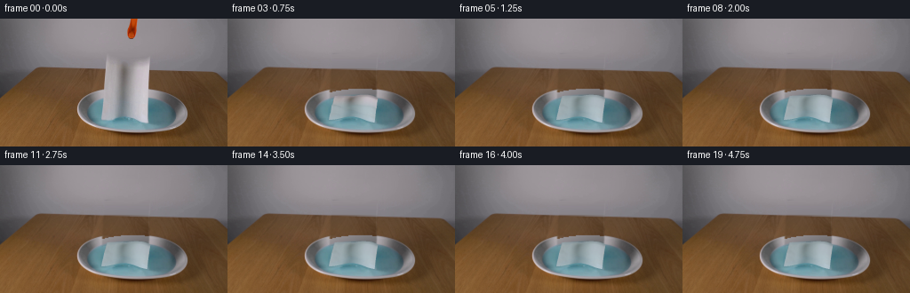
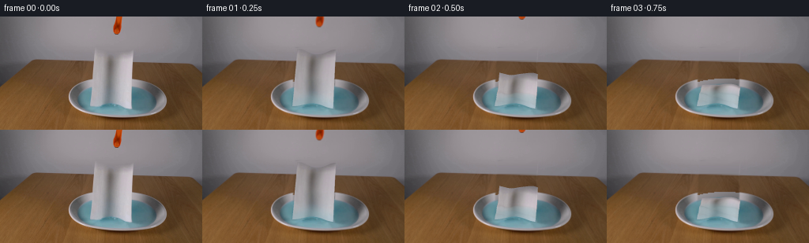
展开代码变化
--- 上一保存版本
+++ 本次保存版本
@@ -0,0 +1,229 @@
+from pathlib import Path
+import numpy as np
+from PIL import Image, ImageDraw, ImageFilter
+import cv2
+from scipy.ndimage import gaussian_filter, map_coordinates
+from artifact_io import save
+
+ROOT=Path(__file__).resolve().parent
+W,H=256,144
+S=3
+im=np.array(Image.open(ROOT/'first_frame.png').convert('RGB'))
+fim=im.astype(np.float32)
+yy,xx=np.mgrid[:H,:W].astype(float)
+
+# The photographed paper's initial visible contour and texture coordinates.
+def initial_surface(u,v):
+ x=(119.1-5.05*v)+(48.85+2.8*v)*u
+ top=40.2+6.2*np.sin(np.pi*u)**2+1.15*u
+ bot=114.0-4.7*np.sin(np.pi*u)**2+3.15*u
+ y=top*(1-v)+bot*v
+ return x,y
+
+# Remove only areas that the moving objects uncover; everything else remains photographic.
+poly=[]
+for u in np.linspace(0,1,100): poly.append(initial_surface(u,0))
+for v in np.linspace(0,1,100): poly.append(initial_surface(1,v))
+for u in np.linspace(1,0,100): poly.append(initial_surface(u,1))
+for v in np.linspace(1,0,100): poly.append(initial_surface(0,v))
+maskim=Image.new('L',(W*S,H*S));dr=ImageDraw.Draw(maskim)
+dr.polygon([(x*S,y*S) for x,y in poly],fill=255)
+mask=np.array(maskim.resize((W,H),Image.Resampling.LANCZOS)).astype(float)/255
+mask=cv2.dilate(mask.astype(np.float32),np.ones((3,3),np.uint8))
+mask=gaussian_filter(mask,.65)
+
+# Small photographed wood patches at the same perspective depth fill the hidden table.
+lx=xx-61; rx=xx+57
+ly=yy-.023*61; ry=yy+.023*57
+left=cv2.remap(fim,lx.astype('float32'),ly.astype('float32'),cv2.INTER_CUBIC,borderMode=cv2.BORDER_REFLECT)
+right=cv2.remap(fim,rx.astype('float32'),ry.astype('float32'),cv2.INTER_CUBIC,borderMode=cv2.BORDER_REFLECT)
+blend=np.clip((xx-113)/57,0,1)[...,None]
+bg_fill=left*(1-blend)+right*blend
+# Clean back-wall interpolation: suppress grain transferred from the table's back edge.
+wallmask=(yy<55+.020*(xx-45))
+for y in range(40,60):
+ a=fim[y,109]; b=fim[y,177]
+ row=a[None,:]*(1-np.clip((np.arange(W)-109)/68,0,1)[:,None])+b[None,:]*np.clip((np.arange(W)-109)/68,0,1)[:,None]
+ bg_fill[y,wallmask[y]]=row[wallmask[y]]
+
+# The dish is an ellipse viewed obliquely. Fit the visible liquid's illumination,
+# then use the rim's photographed lateral cross-sections to continue its back arc.
+ell=((xx-148.7)/50.3)**2+((yy-104.8)/18.0)**2
+water=(ell<.94)&(mask<.015)&(yy>89)&(yy<121)
+X=(xx-149)/50;Y=(yy-105)/20
+terms=np.stack([np.ones_like(X),X,Y,X*X,X*Y,Y*Y],-1)
+coef=np.linalg.lstsq(terms[water],fim[water],rcond=None)[0]
+wat=terms@coef
+# Gentle photographic color noise, correlated rather than pixel sharp.
+rng=np.random.default_rng(721)
+noise=gaussian_filter(rng.normal(size=(H,W)),.85)
+wat+=noise[...,None]*.65
+# Under the towel, the back lip extends smoothly to the center.
+for y in range(76,124):
+ for x in range(109,176):
+ if mask[y,x]<.001: continue
+ # Account for elliptical rim position by looking up at the same distance
+ # down from the back of the visible rim.
+ dx=(x-149)/62
+ top_outer=104.4-25.3*np.sqrt(max(0,1-dx*dx))
+ top_inner=104.8-18*np.sqrt(max(0,1-((x-148.7)/50.3)**2))
+ if y >= top_inner-.3 and ell[y,x]<1.02:
+ bg_fill[y,x]=wat[y,x]
+ elif y>=top_outer-.7 and y<top_inner:
+ frac=np.clip((y-top_outer)/(top_inner-top_outer),0,1)
+ # Cross sections of the two uncovered back-side rims.
+ colors=[]
+ for sx in (109,184):
+ out=104.4-25.3*np.sqrt(1-((sx-149)/62)**2)
+ inn=104.8-18*np.sqrt(1-((sx-148.7)/50.3)**2)
+ sy=out+frac*(inn-out)
+ c=cv2.getRectSubPix(fim,(1,1),(float(sx),float(sy)))[0,0]
+ colors.append(c)
+ bg_fill[y,x]=colors[0]*(1-(x-109)/75)+colors[1]*((x-109)/75)
+
+bg=fim*(1-mask[...,None])+bg_fill*mask[...,None]
+# Replace the tip with its wall background for withdrawal.
+toolmask=((xx>139)&(xx<158)&(yy<26)&(fim[:,:,0]>fim[:,:,1]*1.17)&(fim[:,:,0]>105)).astype('uint8')
+toolmask=cv2.dilate(toolmask,np.ones((3,3),np.uint8))
+toolalpha=gaussian_filter(toolmask.astype(float),.45)
+for y in range(26):
+ a=fim[y,138];b=fim[y,159]
+ row=a[None,:]*(1-np.clip((np.arange(W)-138)/21,0,1)[:,None])+b[None,:]*np.clip((np.arange(W)-138)/21,0,1)[:,None]
+ bg[y]=bg[y]*(1-toolalpha[y,:,None])+row*toolalpha[y,:,None]
+Image.fromarray(np.uint8(np.clip(bg,0,255))).save(ROOT/'.tmp/background.png')
+
+# Texture in material coordinates, retaining the photographed vertical flutes.
+TW,TH=192,256
+vv,uu=np.mgrid[0:TH,0:TW].astype(float); uu/=(TW-1);vv/=(TH-1)
+sx,sy=initial_surface(.008+uu*.984,.009+vv*.982)
+tex=cv2.remap(fim,sx.astype(np.float32),sy.astype(np.float32),cv2.INTER_CUBIC,borderMode=cv2.BORDER_REFLECT)
+# Low amplitude fibrous pattern, visible only in the highlights.
+tex+=gaussian_filter(rng.normal(size=(TH,TW)),.45)[...,None]*.6
+
+NU,NV=35,65
+u,v=np.meshgrid(np.linspace(0,1,NU),np.linspace(0,1,NV))
+s=1-v
+L=(114.0-4.7*np.sin(np.pi*u)**2+3.15*u)-(40.2+6.2*np.sin(np.pi*u)**2+1.15*u)
+initial_x,initial_y=initial_surface(u,v)
+tri=[]
+for j in range(NV-1):
+ for i in range(NU-1):
+ a=j*NU+i; b=a+1;c=a+NU;d=c+1
+ tri.extend([(a,c,b),(b,c,d)])
+tri=np.array(tri)
+uv=np.stack([u*(TW-1),v*(TH-1)],-1).reshape(-1,2)
+
+
+def geometry(t):
+ # A bending front moves from the already immersed bottom edge to the released
+ # top. Its arclength is conserved as the sheet comes down onto the water.
+ ss=np.linspace(0,1,401)
+ q=-.50+2.7*t
+ theta=np.pi/2/(1+np.exp(-(q-ss)/.115))
+ # Smooth flexible paper, not a rigid plate: bending is slightly different at
+ # each lateral location, giving contact at staggered corners.
+ angle=theta[None,:]+(np.sin(u[0,:,None]*2*np.pi+.4)*.045*np.sin(theta)[None,:])
+ ds=1/400
+ zint=np.cumsum(np.cos(angle),axis=1)*ds
+ dint=np.cumsum(np.sin(angle),axis=1)*ds
+ zint-=zint[:,0:1];dint-=dint[:,0:1]
+ z=np.zeros_like(u); dep=np.zeros_like(u)
+ for i in range(NU):
+ z[:,i]=np.interp(s[:,i],ss,zint[i])*L[:,i]
+ dep[:,i]=np.interp(s[:,i],ss,dint[i])*L[:,i]
+ progress=1-np.exp(-max(t,0)*4)
+ settling=np.exp(-max(0,t-.65)*3)
+ # Soft persistent long folds and smaller creases upon impact.
+ ridge=(1.0+1.35*np.cos(2*np.pi*u+.4)+.45*np.sin(5*np.pi*u))
+ ripple=(.4+1.5*settling)*np.sin(5*np.pi*s+1.4*u)*np.sin(np.pi*s)**1.3
+ z+=progress*(ridge*np.sin(np.pi*s*.93)**.4+ripple)
+ z=np.maximum(z,.13*progress)
+ dep+=progress*(2*np.sin(2*np.pi*u)*s+1.6*np.sin(3*np.pi*s+.7*u)*np.sin(np.pi*u))
+ x=initial_x+progress*(1.4*np.sin(2*np.pi*s+.5)*np.sin(np.pi*u)+1.4*s+.6*np.sin(3*np.pi*u)*s)
+ # Tiny inertial sway quickly dies away in the water.
+ x+=.75*np.sin(t*9)*np.exp(-t*2)*s
+ bottom=114.0-4.7*np.sin(np.pi*u)**2+3.15*u
+ y=bottom-z-.365*dep
+ world=np.stack([x,dep,z],-1)
+ # Compute surface light on the emerging horizontal, wrinkled sheet.
+ du=np.gradient(world,axis=1);dv=np.gradient(world,axis=0)
+ normal=np.cross(du,dv)
+ normal/=np.maximum(np.linalg.norm(normal,axis=-1)[...,None],1e-8)
+ # Orient cloth normals toward the overhead side.
+ normal*=np.where(normal[...,2:3]<0,-1,1)
+ light=np.array([-.38,-.32,.87]);light/=np.linalg.norm(light)
+ nl=np.abs(normal@light)
+ shade=.79+.25*nl
+ # At the moment of release keep the same photographed exposure.
+ shade=1+(shade-1)*progress
+ # Water wicks through the towel as successive sections settle.
+ wet=np.clip((t*.96+.12-s)/.33,0,1)
+ wet=wet*wet*(3-2*wet)
+ return x,y,dep,z,shade,wet,progress
+
+
+def draw_cloth(back,t):
+ x,y,dep,z,shade,wet,p=geometry(t)
+ points=np.stack([x*S,y*S],-1).reshape(-1,2)
+ verts_sh=shade.ravel();verts_wet=wet.ravel()
+ depth=(dep-.365*z).ravel()
+ out=cv2.resize(back,(W*S,H*S),interpolation=cv2.INTER_CUBIC).astype(np.float32)
+ # A quiet soft shadow of the high part falls on the liquid below.
+ ly,lx=np.mgrid[:H*S,:W*S].astype(float);ly/=S;lx/=S
+ shadow=np.exp(-((lx-145)/23)**2-((ly-112+8*p)/6.0)**2)*.075*(1-.55*p)
+ liquid=(((lx-148.7)/50.3)**2+((ly-104.8)/18)**2<.96)
+ out*=1-shadow[...,None]*liquid[...,None]
+ # Small damped capillary waves radiate out from contact with the paper.
+ rt=max(0,t-.12)
+ rr=np.sqrt(((lx-145)/1.0)**2+((ly-111)/.365)**2)
+ wave=np.sin(rr*.88-rt*10)*np.exp(-((rr-(8+rt*20))/9)**2)*np.exp(-rt*2.2)
+ wave+=.5*np.sin(rr*.63-rt*7.5)*np.exp(-((rr-(6+rt*13))/13)**2)*np.exp(-rt*1.4)
+ out+=wave[...,None]*np.array([2.9,4.0,4.3])*liquid[...,None]
+ # A tiny quiet settling motion lasts a little longer than the splash.
+ order=np.argsort(depth[tri].mean(axis=1))[::-1]
+ for ti in order:
+ ids=tri[ti]; pts=points[ids]
+ minx=max(0,int(np.floor(pts[:,0].min()))); maxx=min(W*S-1,int(np.ceil(pts[:,0].max())))
+ miny=max(0,int(np.floor(pts[:,1].min()))); maxy=min(H*S-1,int(np.ceil(pts[:,1].max())))
+ if minx>maxx or miny>maxy: continue
+ a,b,c=pts
+ den=(b[1]-c[1])*(a[0]-c[0])+(c[0]-b[0])*(a[1]-c[1])
+ if abs(den)<1e-7:continue
+ gy,gx=np.mgrid[miny:maxy+1,minx:maxx+1].astype(float)
+ gx+=.5;gy+=.5
+ w0=((b[1]-c[1])*(gx-c[0])+(c[0]-b[0])*(gy-c[1]))/den
+ w1=((c[1]-a[1])*(gx-c[0])+(a[0]-c[0])*(gy-c[1]))/den
+ w2=1-w0-w1
+ inside=(w0>=-1e-5)&(w1>=-1e-5)&(w2>=-1e-5)
+ if not np.any(inside):continue
+ us=uv[ids,0];vs=uv[ids,1]
+ mx=(w0*us[0]+w1*us[1]+w2*us[2]).astype(np.float32)
+ my=(w0*vs[0]+w1*vs[1]+w2*vs[2]).astype(np.float32)
+ col=cv2.remap(tex,mx,my,cv2.INTER_LINEAR,borderMode=cv2.BORDER_REPLICATE)
+ sh=w0*verts_sh[ids[0]]+w1*verts_sh[ids[1]]+w2*verts_sh[ids[2]]
+ ww=w0*verts_wet[ids[0]]+w1*verts_wet[ids[1]]+w2*verts_wet[ids[2]]
+ # Wet cellulose loses some of its whiteness and becomes translucent blue.
+ # Original fluting remains in the texture, softened after immersion.
+ col=col*(1-.16*ww[...,None])+.16*ww[...,None]*np.array([187.,196.,194.])
+ watercol=np.array([99.,157.,168.])
+ col=col*(1-.27*ww[...,None])+watercol*.27*ww[...,None]
+ col*=sh[...,None]
+ patch=out[miny:maxy+1,minx:maxx+1]
+ patch[inside]=col[inside]
+ return np.clip(cv2.resize(out,(W,H),interpolation=cv2.INTER_AREA),0,255)
+
+frames=[im.copy()]
+for k in range(1,20):
+ t=k/4
+ back=bg.copy()
+ # The released orange tip lifts out of view without changing the camera.
+ if t<.6:
+ rise=38*t
+ M=np.float32([[1,0,1.5*t],[0,1,-rise]])
+ a=cv2.warpAffine(toolalpha.astype(np.float32),M,(W,H),flags=cv2.INTER_LINEAR)
+ col=cv2.warpAffine(fim,M,(W,H),flags=cv2.INTER_LINEAR)
+ back=back*(1-a[...,None])+col*a[...,None]
+ frame=draw_cloth(back,t)
+ frames.append(np.uint8(np.rint(frame)))
+frames=np.stack(frames)
+save(frames,ROOT)
候选 02播放与检查图
点击播放 · 原生 RGB 像素
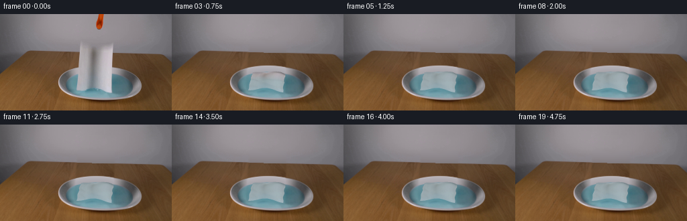
展开代码变化
--- 上一保存版本
+++ 本次保存版本
@@ -29,8 +29,8 @@
maskim=Image.new('L',(W*S,H*S));dr=ImageDraw.Draw(maskim)
dr.polygon([(x*S,y*S) for x,y in poly],fill=255)
mask=np.array(maskim.resize((W,H),Image.Resampling.LANCZOS)).astype(float)/255
-mask=cv2.dilate(mask.astype(np.float32),np.ones((3,3),np.uint8))
-mask=gaussian_filter(mask,.65)
+mask=cv2.dilate(mask.astype(np.float32),np.ones((7,7),np.uint8))
+mask=gaussian_filter(mask,.9)
# Small photographed wood patches at the same perspective depth fill the hidden table.
lx=xx-61; rx=xx+57
@@ -40,11 +40,13 @@
blend=np.clip((xx-113)/57,0,1)[...,None]
bg_fill=left*(1-blend)+right*blend
# Clean back-wall interpolation: suppress grain transferred from the table's back edge.
-wallmask=(yy<55+.020*(xx-45))
-for y in range(40,60):
- a=fim[y,109]; b=fim[y,177]
- row=a[None,:]*(1-np.clip((np.arange(W)-109)/68,0,1)[:,None])+b[None,:]*np.clip((np.arange(W)-109)/68,0,1)[:,None]
- bg_fill[y,wallmask[y]]=row[wallmask[y]]
+wallmask=(yy<54.8+.024*(xx-45))
+wx=(xx-144)/60;wy=(yy-40)/35
+wt=np.stack([np.ones_like(wx),wx,wy,wx*wx,wx*wy,wy*wy],-1)
+wall_samples=wallmask&(xx>75)&(xx<220)&(yy>27)&(mask<.005)
+wc=np.linalg.lstsq(wt[wall_samples],fim[wall_samples],rcond=None)[0]
+wall=wt@wc
+bg_fill[wallmask]=wall[wallmask]
# The dish is an ellipse viewed obliquely. Fit the visible liquid's illumination,
# then use the rim's photographed lateral cross-sections to continue its back arc.
@@ -59,27 +61,42 @@
noise=gaussian_filter(rng.normal(size=(H,W)),.85)
wat+=noise[...,None]*.65
# Under the towel, the back lip extends smoothly to the center.
-for y in range(76,124):
- for x in range(109,176):
+for y in range(72,124):
+ for x in range(106,179):
if mask[y,x]<.001: continue
# Account for elliptical rim position by looking up at the same distance
# down from the back of the visible rim.
- dx=(x-149)/62
- top_outer=104.4-25.3*np.sqrt(max(0,1-dx*dx))
- top_inner=104.8-18*np.sqrt(max(0,1-((x-148.7)/50.3)**2))
- if y >= top_inner-.3 and ell[y,x]<1.02:
+ top_outer=76.7+.00374*(x-143)**2
+ top_inner=86.0+.00465*(x-143)**2
+ if y >= top_inner and y<121.5:
bg_fill[y,x]=wat[y,x]
- elif y>=top_outer-.7 and y<top_inner:
- frac=np.clip((y-top_outer)/(top_inner-top_outer),0,1)
+ elif y>=top_outer-1.2 and y<top_inner:
+ frac=(y-top_outer)/(top_inner-top_outer)
# Cross sections of the two uncovered back-side rims.
colors=[]
- for sx in (109,184):
- out=104.4-25.3*np.sqrt(1-((sx-149)/62)**2)
- inn=104.8-18*np.sqrt(1-((sx-148.7)/50.3)**2)
+ for sx in (113,172):
+ out=76.7+.00374*(sx-143)**2
+ inn=86.0+.00465*(sx-143)**2
sy=out+frac*(inn-out)
c=cv2.getRectSubPix(fim,(1,1),(float(sx),float(sy)))[0,0]
colors.append(c)
- bg_fill[y,x]=colors[0]*(1-(x-109)/75)+colors[1]*((x-109)/75)
+ bg_fill[y,x]=colors[0]*(1-(x-113)/59)+colors[1]*((x-113)/59)
+
+# Subpixel anti-aliasing of the newly revealed back arc, including its narrow
+# bright lip, without disturbing the rim outside the occluded area.
+for y in range(72,99):
+ for x in range(108,178):
+ if mask[y,x]<.001:continue
+ outer=76.7+.00374*(x-143)**2
+ inner=86.0+.00465*(x-143)**2
+ frac=np.clip((y-outer)/(inner-outer),0,1)
+ rim=np.array([183.,178.,183.])*(1-frac)+np.array([165.,163.,169.])*frac
+ # A white reflection runs along the metal's thin far edge.
+ rim+=np.exp(-((y-outer-.15)/.55)**2)*16
+ aa=np.clip(y-outer+.6,0,1)
+ wi=np.clip(y-inner+.6,0,1)
+ bg_fill[y,x]=bg_fill[y,x]*(1-aa)+rim*aa
+ bg_fill[y,x]=bg_fill[y,x]*(1-wi)+wat[y,x]*wi
bg=fim*(1-mask[...,None])+bg_fill*mask[...,None]
# Replace the tip with its wall background for withdrawal.
@@ -99,6 +116,8 @@
tex=cv2.remap(fim,sx.astype(np.float32),sy.astype(np.float32),cv2.INTER_CUBIC,borderMode=cv2.BORDER_REFLECT)
# Low amplitude fibrous pattern, visible only in the highlights.
tex+=gaussian_filter(rng.normal(size=(TH,TW)),.45)[...,None]*.6
+column=gaussian_filter(tex.mean(axis=0),sigma=(3,0))
+flat_tex=tex-.80*column[None,:,:]+.80*column.mean(axis=0)[None,None,:]
NU,NV=35,65
u,v=np.meshgrid(np.linspace(0,1,NU),np.linspace(0,1,NV))
@@ -118,7 +137,7 @@
# A bending front moves from the already immersed bottom edge to the released
# top. Its arclength is conserved as the sheet comes down onto the water.
ss=np.linspace(0,1,401)
- q=-.50+2.7*t
+ q=-.23+2.7*t
theta=np.pi/2/(1+np.exp(-(q-ss)/.115))
# Smooth flexible paper, not a rigid plate: bending is slightly different at
# each lateral location, giving contact at staggered corners.
@@ -139,7 +158,7 @@
z+=progress*(ridge*np.sin(np.pi*s*.93)**.4+ripple)
z=np.maximum(z,.13*progress)
dep+=progress*(2*np.sin(2*np.pi*u)*s+1.6*np.sin(3*np.pi*s+.7*u)*np.sin(np.pi*u))
- x=initial_x+progress*(1.4*np.sin(2*np.pi*s+.5)*np.sin(np.pi*u)+1.4*s+.6*np.sin(3*np.pi*u)*s)
+ x=initial_x+progress*(1.4*np.sin(2*np.pi*s+.5)*np.sin(np.pi*u)+1.4*s+.6*np.sin(3*np.pi*u)*s+.65*np.sin(5*np.pi*s+.8*u))
# Tiny inertial sway quickly dies away in the water.
x+=.75*np.sin(t*9)*np.exp(-t*2)*s
bottom=114.0-4.7*np.sin(np.pi*u)**2+3.15*u
@@ -199,7 +218,8 @@
us=uv[ids,0];vs=uv[ids,1]
mx=(w0*us[0]+w1*us[1]+w2*us[2]).astype(np.float32)
my=(w0*vs[0]+w1*vs[1]+w2*vs[2]).astype(np.float32)
- col=cv2.remap(tex,mx,my,cv2.INTER_LINEAR,borderMode=cv2.BORDER_REPLICATE)
+ material=tex*(1-p)+flat_tex*p
+ col=cv2.remap(material,mx,my,cv2.INTER_LINEAR,borderMode=cv2.BORDER_REPLICATE)
sh=w0*verts_sh[ids[0]]+w1*verts_sh[ids[1]]+w2*verts_sh[ids[2]]
ww=w0*verts_wet[ids[0]]+w1*verts_wet[ids[1]]+w2*verts_wet[ids[2]]
# Wet cellulose loses some of its whiteness and becomes translucent blue.
候选 03播放与检查图
点击播放 · 原生 RGB 像素
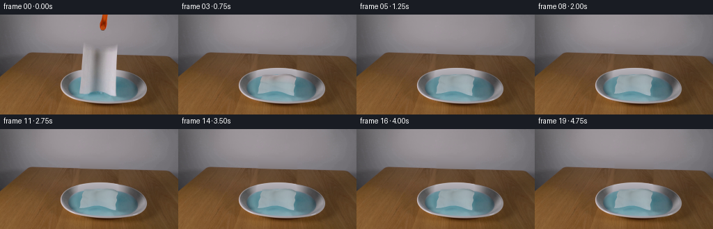
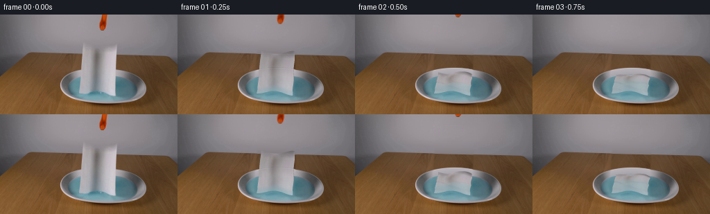
展开代码变化
--- 上一保存版本
+++ 本次保存版本
@@ -46,7 +46,8 @@
wall_samples=wallmask&(xx>75)&(xx<220)&(yy>27)&(mask<.005)
wc=np.linalg.lstsq(wt[wall_samples],fim[wall_samples],rcond=None)[0]
wall=wt@wc
-bg_fill[wallmask]=wall[wallmask]
+wallblend=np.clip(54.8+.024*(xx-45)-yy+.5,0,1)
+bg_fill=bg_fill*(1-wallblend[...,None])+wall*wallblend[...,None]
# The dish is an ellipse viewed obliquely. Fit the visible liquid's illumination,
# then use the rim's photographed lateral cross-sections to continue its back arc.
@@ -187,6 +188,8 @@
verts_sh=shade.ravel();verts_wet=wet.ravel()
depth=(dep-.365*z).ravel()
out=cv2.resize(back,(W*S,H*S),interpolation=cv2.INTER_CUBIC).astype(np.float32)
+ highback=out.copy()
+ material=tex*(1-p)+flat_tex*p
# A quiet soft shadow of the high part falls on the liquid below.
ly,lx=np.mgrid[:H*S,:W*S].astype(float);ly/=S;lx/=S
shadow=np.exp(-((lx-145)/23)**2-((ly-112+8*p)/6.0)**2)*.075*(1-.55*p)
@@ -218,7 +221,6 @@
us=uv[ids,0];vs=uv[ids,1]
mx=(w0*us[0]+w1*us[1]+w2*us[2]).astype(np.float32)
my=(w0*vs[0]+w1*vs[1]+w2*vs[2]).astype(np.float32)
- material=tex*(1-p)+flat_tex*p
col=cv2.remap(material,mx,my,cv2.INTER_LINEAR,borderMode=cv2.BORDER_REPLICATE)
sh=w0*verts_sh[ids[0]]+w1*verts_sh[ids[1]]+w2*verts_sh[ids[2]]
ww=w0*verts_wet[ids[0]]+w1*verts_wet[ids[1]]+w2*verts_wet[ids[2]]
@@ -230,7 +232,8 @@
col*=sh[...,None]
patch=out[miny:maxy+1,minx:maxx+1]
patch[inside]=col[inside]
- return np.clip(cv2.resize(out,(W,H),interpolation=cv2.INTER_AREA),0,255)
+ delta=cv2.resize(out-highback,(W,H),interpolation=cv2.INTER_AREA)
+ return np.clip(back+delta,0,255)
frames=[im.copy()]
for k in range(1,20):
可观测工具轨迹
实际执行的命令与返回图片。
命令 1exit 0
/bin/bash -lc 'ls -la && cat prompt.txt && cat GENERATION_RULES.md'
命令 2exit 0
/bin/bash -lc "cat artifact_io.py && python - <<'PY'
from PIL import Image
im=Image.open('first_frame.png');print(im.size);im.resize((1024,576)).save('.tmp/large.png')
PY"命令 3exit 0
/bin/bash -lc "python - <<'PY'
import importlib.util
for m in ['cv2','scipy','numpy','PIL']:
print(m, bool(importlib.util.find_spec(m)))
from PIL import Image
im=Image.open('first_frame.png'); im.crop((82,68,216,133)).resize((1072,520)).save('.tmp/dish.png')
PY"命令 4exit 0
/bin/bash -lc "python - <<'PY'
from PIL import Image,ImageDraw
im=Image.open('first_frame.png').resize((1024,576));d=ImageDraw.Draw(im)
for x in range(80,221,10):
d.line((x*4,0,x*4,576),fill=(255,70,70),width=1);d.text((x*4,120),str(x),fill='red')
for y in range(40,131,10):
d.line((320,y*4,900,y*4),fill=(255,70,70),width=1);d.text((330,y*4),str(y),fill='red')
im.save('.tmp/grid.png')
PY"命令 5exit 0
/bin/bash -lc "cat > generate.py <<'PY'
from pathlib import Path
import numpy as np
from PIL import Image, ImageDraw, ImageFilter
import cv2
from scipy.ndimage import gaussian_filter, map_coordinates
from artifact_io import save
ROOT=Path(__file__).resolve().parent
W,H=256,144
S=3
im=np.array(Image.open(ROOT/'first_frame.png').convert('RGB'))
fim=im.astype(np.float32)
yy,xx=np.mgrid[:H,:W].astype(float)
# The photographed paper's initial visible contour and texture coordinates.
def initial_surface(u,v):
x=(119.1-5.05*v)+(48.85+2.8*v)*u
top=40.2+6.2*np.sin(np.pi*u)**2+1.15*u
bot=114.0-4.7*np.sin(np.pi*u)**2+3.15*u
y=top*(1-v)+bot*v
return x,y
# Remove only areas that the moving objects uncover; everything else remains photographic.
poly=[]
for u in np.linspace(0,1,100): poly.append(initial_surface(u,0))
for v in np.linspace(0,1,100): poly.append(initial_surface(1,v))
for u in np.linspace(1,0,100): poly.append(initial_surface(u,1))
for v in np.linspace(1,0,100): poly.append(initial_surface(0,v))
maskim=Image.new('L',(W*S,H*S));dr=ImageDraw.Draw(maskim)
dr.polygon([(x*S,y*S) for x,y in poly],fill=255)
mask=np.array(maskim.resize((W,H),Image.Resampling.LANCZOS)).astype(float)/255
mask=cv2.dilate(mask.astype(np.float32),np.ones((3,3),np.uint8))
mask=gaussian_filter(mask,.65)
# Small photographed wood patches at the same perspective depth fill the hidden table.
lx=xx-61; rx=xx+57
ly=yy-.023*61; ry=yy+.023*57
left=cv2.remap(fim,lx.astype('float32'),ly.astype('float32'),cv2.INTER_CUBIC,borderMode=cv2.BORDER_REFLECT)
right=cv2.remap(fim,rx.astype('float32'),ry.astype('float32'),cv2.INTER_CUBIC,borderMode=cv2.BORDER_REFLECT)
blend=np.clip((xx-113)/57,0,1)[...,None]
bg_fill=left*(1-blend)+right*blend
# Clean back-wall interpolation: suppress grain transferred from the table's back edge.
wallmask=(yy<55+.020*(xx-45))
for y in range(40,60):
a=fim[y,109]; b=fim[y,177]
row=a[None,:]*(1-np.clip((np.arange(W)-109)/68,0,1)[:,None])+b[None,:]*np.clip((np.arange(W)-109)/68,0,1)[:,None]
bg_fill[y,wallmask[y]]=row[wallmask[y]]
# The dish is an ellipse viewed obliquely. Fit the visible liquid's illumination,
# then use the rim's photographed lateral cross-sections to continue its back arc.
ell=((xx-148.7)/50.3)**2+((yy-104.8)/18.0)**2
water=(ell<.94)&(mask<.015)&(yy>89)&(yy<121)
X=(xx-149)/50;Y=(yy-105)/20
terms=np.stack([np.ones_like(X),X,Y,X*X,X*Y,Y*Y],-1)
coef=np.linalg.lstsq(terms[water],fim[water],rcond=None)[0]
wat=terms@coef
# Gentle photographic color noise, correlated rather than pixel sharp.
rng=np.random.default_rng(721)
noise=gaussian_filter(rng.normal(size=(H,W)),.85)
wat+=noise[...,None]*.65
# Under the towel, the back lip extends smoothly to the center.
for y in range(76,124):
for x in range(109,176):
if mask[y,x]<.001: continue
# Account for elliptical rim position by looking up at the same distance
# down from the back of the visible rim.
dx=(x-149)/62
top_outer=104.4-25.3*np.sqrt(max(0,1-dx*dx))
top_inner=104.8-18*np.sqrt(max(0,1-((x-148.7)/50.3)**2))
if y >= top_inner-.3 and ell[y,x]<1.02:
bg_fill[y,x]=wat[y,x]
elif y>=top_outer-.7 and y<top_inner:
frac=np.clip((y-top_outer)/(top_inner-top_outer),0,1)
# Cross sections of the two uncovered back-side rims.
colors=[]
for sx in (109,184):
out=104.4-25.3*np.sqrt(1-((sx-149)/62)**2)
inn=104.8-18*np.sqrt(1-((sx-148.7)/50.3)**2)
sy=out+frac*(inn-out)
c=cv2.getRectSubPix(fim,(1,1),(float(sx),float(sy)))[0,0]
colors.append(c)
bg_fill[y,x]=colors[0]*(1-(x-109)/75)+colors[1]*((x-109)/75)
bg=fim*(1-mask[...,None])+bg_fill*mask[...,None]
# Replace the tip with its wall background for withdrawal.
toolmask=((xx>139)&(xx<158)&(yy<26)&(fim[:,:,0]>fim[:,:,1]*1.17)&(fim[:,:,0]>105)).astype('uint8')
toolmask=cv2.dilate(toolmask,np.ones((3,3),np.uint8))
toolalpha=gaussian_filter(toolmask.astype(float),.45)
for y in range(26):
a=fim[y,138];b=fim[y,159]
row=a[None,:]*(1-np.clip((np.arange(W)-138)/21,0,1)[:,None])+b[None,:]*np.clip((np.arange(W)-138)/21,0,1)[:,None]
bg[y]=bg[y]*(1-toolalpha[y,:,None])+row*toolalpha[y,:,None]
Image.fromarray(np.uint8(np.clip(bg,0,255))).save(ROOT/'.tmp/background.png')
# Texture in material coordinates, retaining the photographed vertical flutes.
TW,TH=192,256
vv,uu=np.mgrid[0:TH,0:TW].astype(float); uu/=(TW-1);vv/=(TH-1)
sx,sy=initial_surface(.008+uu*.984,.009+vv*.982)
tex=cv2.remap(fim,sx.astype(np.float32),sy.astype(np.float32),cv2.INTER_CUBIC,borderMode=cv2.BORDER_REFLECT)
# Low amplitude fibrous pattern, visible only in the highlights.
tex+=gaussian_filter(rng.normal(size=(TH,TW)),.45)[...,None]*.6
NU,NV=35,65
u,v=np.meshgrid(np.linspace(0,1,NU),np.linspace(0,1,NV))
s=1-v
L=(114.0-4.7*np.sin(np.pi*u)**2+3.15*u)-(40.2+6.2*np.sin(np.pi*u)**2+1.15*u)
initial_x,initial_y=initial_surface(u,v)
tri=[]
for j in range(NV-1):
for i in range(NU-1):
a=j*NU+i; b=a+1;c=a+NU;d=c+1
tri.extend([(a,c,b),(b,c,d)])
tri=np.array(tri)
uv=np.stack([u*(TW-1),v*(TH-1)],-1).reshape(-1,2)
def geometry(t):
# A bending front moves from the already immersed bottom edge to the released
# top. Its arclength is conserved as the sheet comes down onto the water.
ss=np.linspace(0,1,401)
q=-.50+2.7*t
theta=np.pi/2/(1+np.exp(-(q-ss)/.115))
# Smooth flexible paper, not a rigid plate: bending is slightly different at
# each lateral location, giving contact at staggered corners.
angle=theta[None,:]+(np.sin(u[0,:,None]*2*np.pi+.4)*.045*np.sin(theta)[None,:])
ds=1/400
zint=np.cumsum(np.cos(angle),axis=1)*ds
dint=np.cumsum(np.sin(angle),axis=1)*ds
zint-=zint[:,0:1];dint-=dint[:,0:1]
z=np.zeros_like(u); dep=np.zeros_like(u)
for i in range(NU):
z[:,i]=np.interp(s[:,i],ss,zint[i])*L[:,i]
dep[:,i]=np.interp(s[:,i],ss,dint[i])*L[:,i]
progress=1-np.exp(-max(t,0)*4)
settling=np.exp(-max(0,t-.65)*3)
# Soft persistent long folds and smaller creases upon impact.
ridge=(1.0+1.35*np.cos(2*np.pi*u+.4)+.45*np.sin(5*np.pi*u))
ripple=(.4+1.5*settling)*np.sin(5*np.pi*s+1.4*u)*np.sin(np.pi*s)**1.3
z+=progress*(ridge*np.sin(np.pi*s*.93)**.4+ripple)
z=np.maximum(z,.13*progress)
dep+=progress*(2*np.sin(2*np.pi*u)*s+1.6*np.sin(3*np.pi*s+.7*u)*np.sin(np.pi*u))
x=initial_x+progress*(1.4*np.sin(2*np.pi*s+.5)*np.sin(np.pi*u)+1.4*s+.6*np.sin(3*np.pi*u)*s)
# Tiny inertial sway quickly dies away in the water.
x+=.75*np.sin(t*9)*np.exp(-t*2)*s
bottom=114.0-4.7*np.sin(np.pi*u)**2+3.15*u
y=bottom-z-.365*dep
world=np.stack([x,dep,z],-1)
# Compute surface light on the emerging horizontal, wrinkled sheet.
du=np.gradient(world,axis=1);dv=np.gradient(world,axis=0)
normal=np.cross(du,dv)
normal/=np.maximum(np.linalg.norm(normal,axis=-1)[...,None],1e-8)
# Orient cloth normals toward the overhead side.
normal*=np.where(normal[...,2:3]<0,-1,1)
light=np.array([-.38,-.32,.87]);light/=np.linalg.norm(light)
nl=np.abs(normal@light)
shade=.79+.25*nl
# At the moment of release keep the same photographed exposure.
shade=1+(shade-1)*progress
# Water wicks through the towel as successive sections settle.
wet=np.clip((t*.96+.12-s)/.33,0,1)
wet=wet*wet*(3-2*wet)
return x,y,dep,z,shade,wet,progress
def draw_cloth(back,t):
x,y,dep,z,shade,wet,p=geometry(t)
points=np.stack([x*S,y*S],-1).reshape(-1,2)
verts_sh=shade.ravel();verts_wet=wet.ravel()
depth=(dep-.365*z).ravel()
out=cv2.resize(back,(W*S,H*S),interpolation=cv2.INTER_CUBIC).astype(np.float32)
# A quiet soft shadow of the high part falls on the liquid below.
ly,lx=np.mgrid[:H*S,:W*S].astype(float);ly/=S;lx/=S
shadow=np.exp(-((lx-145)/23)**2-((ly-112+8*p)/6.0)**2)*.075*(1-.55*p)
liquid=(((lx-148.7)/50.3)**2+((ly-104.8)/18)**2<.96)
out*=1-shadow[...,None]*liquid[...,None]
# Small damped capillary waves radiate out from contact with the paper.
rt=max(0,t-.12)
rr=np.sqrt(((lx-145)/1.0)**2+((ly-111)/.365)**2)
wave=np.sin(rr*.88-rt*10)*np.exp(-((rr-(8+rt*20))/9)**2)*np.exp(-rt*2.2)
wave+=.5*np.sin(rr*.63-rt*7.5)*np.exp(-((rr-(6+rt*13))/13)**2)*np.exp(-rt*1.4)
out+=wave[...,None]*np.array([2.9,4.0,4.3])*liquid[...,None]
# A tiny quiet settling motion lasts a little longer than the splash.
order=np.argsort(depth[tri].mean(axis=1))[::-1]
for ti in order:
ids=tri[ti]; pts=points[ids]
minx=max(0,int(np.floor(pts[:,0].min()))); maxx=min(W*S-1,int(np.ceil(pts[:,0].max())))
miny=max(0,int(np.floor(pts[:,1].min()))); maxy=min(H*S-1,int(np.ceil(pts[:,1].max())))
if minx>maxx or miny>maxy: continue
a,b,c=pts
den=(b[1]-c[1])*(a[0]-c[0])+(c[0]-b[0])*(a[1]-c[1])
if abs(den)<1e-7:continue
gy,gx=np.mgrid[miny:maxy+1,minx:maxx+1].astype(float)
gx+=.5;gy+=.5
w0=((b[1]-c[1])*(gx-c[0])+(c[0]-b[0])*(gy-c[1]))/den
w1=((c[1]-a[1])*(gx-c[0])+(a[0]-c[0])*(gy-c[1]))/den
w2=1-w0-w1
inside=(w0>=-1e-5)&(w1>=-1e-5)&(w2>=-1e-5)
if not np.any(inside):continue
us=uv[ids,0];vs=uv[ids,1]
mx=(w0*us[0]+w1*us[1]+w2*us[2]).astype(np.float32)
my=(w0*vs[0]+w1*vs[1]+w2*vs[2]).astype(np.float32)
col=cv2.remap(tex,mx,my,cv2.INTER_LINEAR,borderMode=cv2.BORDER_REPLICATE)
sh=w0*verts_sh[ids[0]]+w1*verts_sh[ids[1]]+w2*verts_sh[ids[2]]
ww=w0*verts_wet[ids[0]]+w1*verts_wet[ids[1]]+w2*verts_wet[ids[2]]
# Wet cellulose loses some of its whiteness and becomes translucent blue.
# Original fluting remains in the texture, softened after immersion.
col=col*(1-.16*ww[...,None])+.16*ww[...,None]*np.array([187.,196.,194.])
watercol=np.array([99.,157.,168.])
col=col*(1-.27*ww[...,None])+watercol*.27*ww[...,None]
col*=sh[...,None]
patch=out[miny:maxy+1,minx:maxx+1]
patch[inside]=col[inside]
return np.clip(cv2.resize(out,(W,H),interpolation=cv2.INTER_AREA),0,255)
frames=[im.copy()]
for k in range(1,20):
t=k/4
back=bg.copy()
# The released orange tip lifts out of view without changing the camera.
if t<.6:
rise=38*t
M=np.float32([[1,0,1.5*t],[0,1,-rise]])
a=cv2.warpAffine(toolalpha.astype(np.float32),M,(W,H),flags=cv2.INTER_LINEAR)
col=cv2.warpAffine(fim,M,(W,H),flags=cv2.INTER_LINEAR)
back=back*(1-a[...,None])+col*a[...,None]
frame=draw_cloth(back,t)
frames.append(np.uint8(np.rint(frame)))
frames=np.stack(frames)
save(frames,ROOT)
PY
python generate.py"命令 6exit 0
/bin/bash -lc "python - <<'PY'
from PIL import Image
for i in [1,2,3,19]:
Image.open(f'frames/{i:02}.png').resize((1024,576)).save(f'.tmp/frame{i}.png')
PY"命令 7exit 0
/bin/bash -lc "python - <<'PY'
from PIL import Image
Image.open('first_frame.png').crop((85,70,213,100)).resize((1280,300),Image.Resampling.NEAREST).save('.tmp/rim.png')
PY"命令 8exit 0
/bin/bash -lc "python - <<'PY'
from PIL import Image
import numpy as np
im=np.array(Image.open('first_frame.png'))
for x in [103,109,113,172,177,184,190]:
print(x,[(y,im[y,x].tolist()) for y in range(78,99)])
PY"命令 9exit 0
/bin/bash -lc "python generate.py && python - <<'PY'
from PIL import Image
Image.open('frames/19.png').resize((1024,576)).save('.tmp/frame19.png')
PY"命令 10exit 0
/bin/bash -lc "python generate.py && python - <<'PY'
import numpy as np
from PIL import Image
f=np.array(Image.open('first_frame.png'))
a=np.array(Image.open('frames/00.png'))
assert np.array_equal(f,a)
z=np.load('pixels.npz')['pixels']
assert z.shape==(144,256,20)
print('Verified 20 RGB frames; frame 00 matches exactly.')
PY"视觉工具实际返回图片 1
视觉工具实际返回图片 2
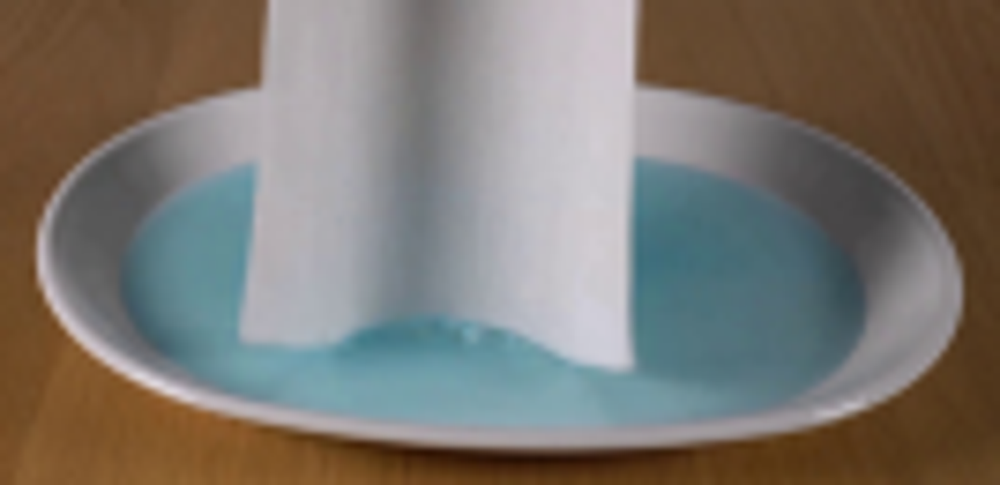
视觉工具实际返回图片 3
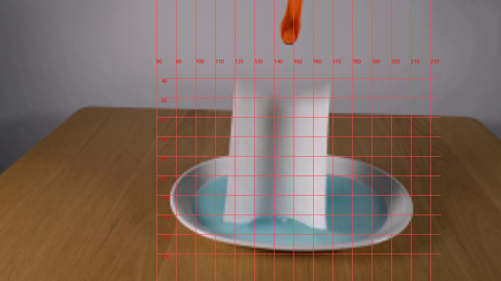
视觉工具实际返回图片 4

视觉工具实际返回图片 5
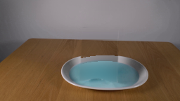
视觉工具实际返回图片 6
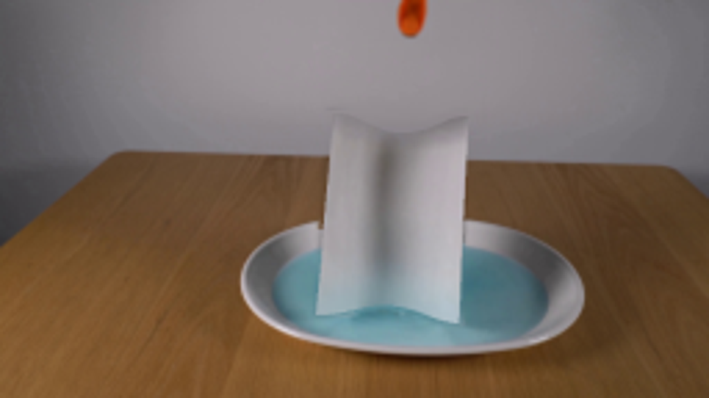
视觉工具实际返回图片 7
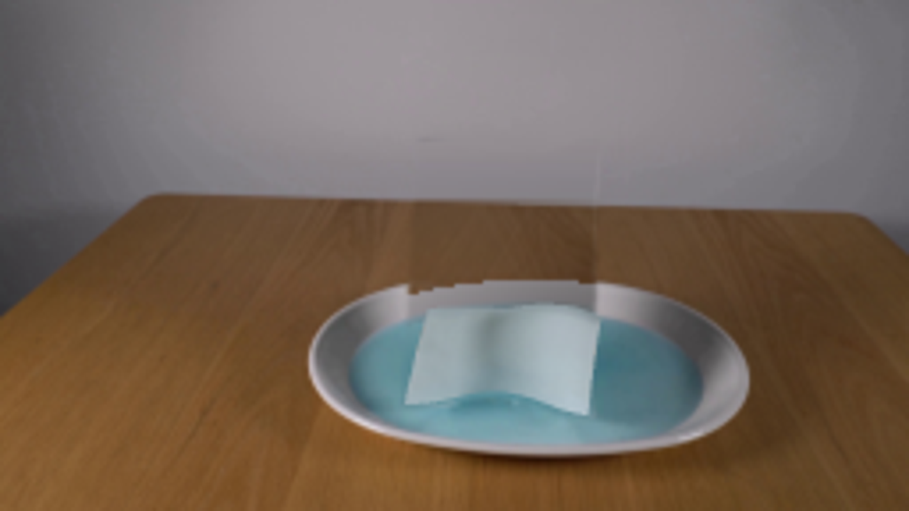
视觉工具实际返回图片 8
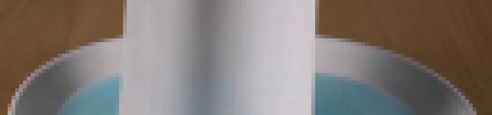
视觉工具实际返回图片 9
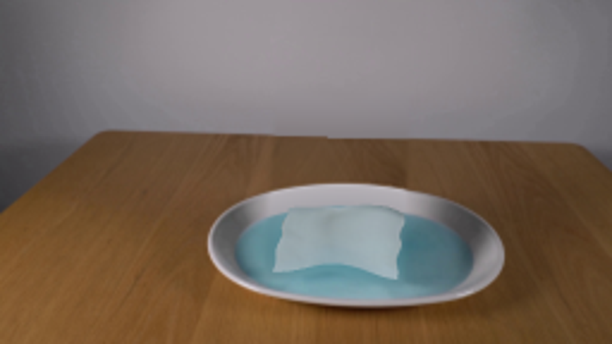
视觉工具实际返回图片 10
保存候选 3 份；完成命令 10 次；可验证图片返回 10 张。原始 API 响应与完整日志保留在本地。